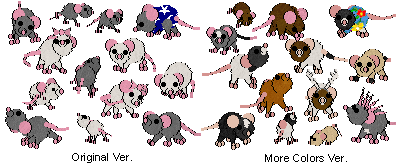
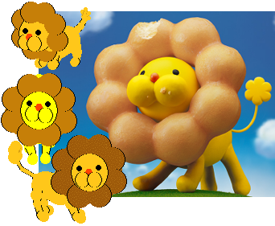
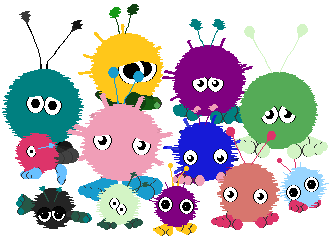

Catz
All breedz contain Petz 5 and Unibreed versions.
If there are multiple versions of a file, the download will contain all of them for you to choose from.
If you'd like a custom version of any of these, feel free to ask me (or hex them yourself if you know how).
For breedz based on Half-Life, please check out the Research Facility.
Mice
Adoptable versions of the Petz Mice. Because Petz Mice have their own skeleton and animations, these mice are a facismile made to resemble Petz Mice as closely as possible using the Catz skeleton.
There are two versions: one includes only the original mice colors (white and grey), while the other has expanded color options that resemble real mice. The two versions will overwrite each other. These do not breed true - they're too small, and have some other wierdness.
Uses the PFMice sounds ripped by Carolyn.
Orange Shorthair base. Non-OW. Added 6.8.2021
Pon de Lion
Based on the mascot character of the same name from the japanese pastry chain "Mister Donut".
Uses internal sounds.
Calico base. Non-OW. Added 6.9.2021
Greature

She loves treats. Based off of a number of tumblr posts which feature a photo of this sculpture.
Standalone .pet file available here.
Uses the PFMice sounds ripped by Carolyn.
Mau base. Non-OW. Added 8.25.2021
Pom pom
Based on little crafts made with pom poms and googly eyes.
Uses Meowless sounds by Unique Petz.
Chinchilla Persian base. Non-OW. Added 9.4.2021